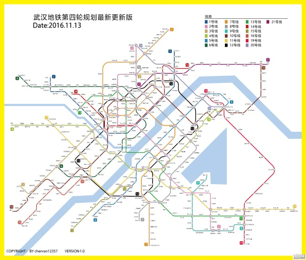
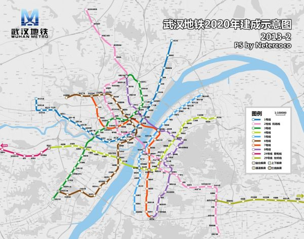
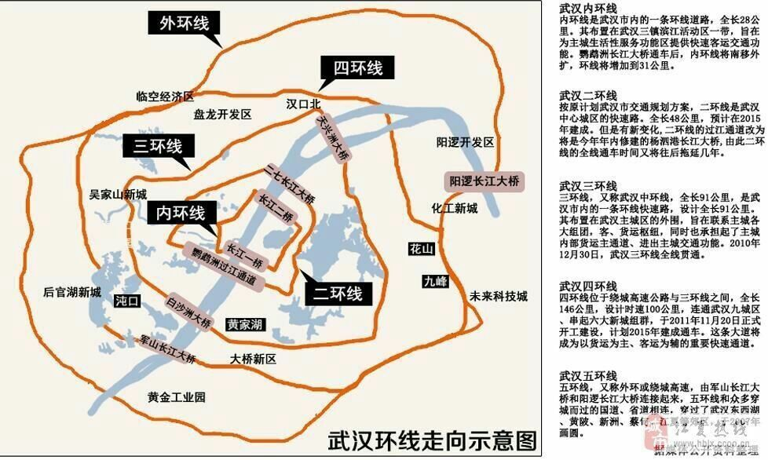
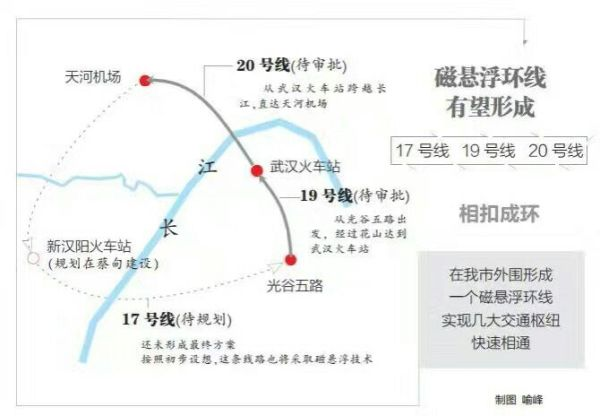

买房看地铁。
20171226 中国城市地铁通车总里程排名，上海617km、北京609.8km、广州 308.7km、南京294km、深圳 285km、香港 264km、武汉237km。
目前武汉通车1/2/3/4/6/7/8/21号线，2018年，武汉地铁有望4线齐发，分别为2号线南延线线、7号线、11号线东段、27号线，总长97.88千米，届时武汉地铁总长将超过330公里，赶超香港，迎接2019年世界军运会。2南延长线和11号线贯通，光谷交通彻底改善，很多一线城市做IT 行业的都会回来光谷。
地铁完善后，估计地铁沿线会上涨一波可能一两千，这个说不准。虽然记录上浮20-40%对房价有抑制作用，不用太担心暴涨。但是明年军运会也可能成为房价上涨的借口，参考杭州G20峰会，海南博鳌论坛等。峰会赛事都是基于城市基建配套完善基础上进行的，也是说明国家对一个城市的认可通过赛事推广。
新一任武汉shi委书记陈一新，开展了资智回汉招商，从华科武大，财大地大，理工大等。极大的发挥了武汉的教育人才校友经济。过去的一年招商规模2.5万亿，虽然有很多也不是实业但是量变的未来就是质变，最终才能实现武汉经济的转型和升级。虽然武汉GDP距离上海差距10年，但是我觉得未来6还是看好武汉的。
而且2019年世界军运会将会在武汉举行，也是基于2018年武汉地铁建设第一阶段的完成的基础上的。基本上北上广深杭南京都举办过赛事，也说明武汉到了一个可以在世人面前自信的展现自我的层次了。赛事的举行必定基于，城市交通，城市绿化，城市配套完善的基础上的。





个人原创博文：
如下为个人对贫穷的深度思考，包含金融杠杆，金融基本理论的分析，以及结合着对楼市以及2018年金融危机风险的分析写的一篇原创博文，无论是武汉还是一二线城市准备买房的人都值得一看，如果觉得写的好，点个赞，评论下，谢谢，o(*￣︶￣*)o